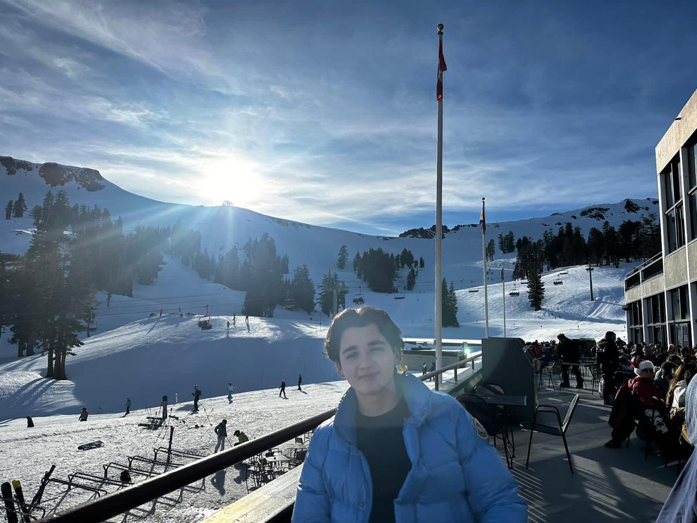
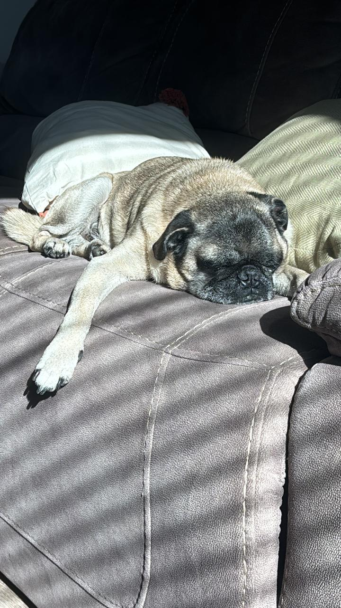
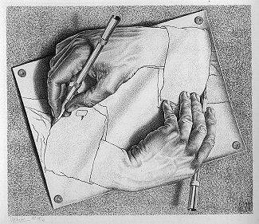

Alejandro Alcocer
I'm a student at UC San Diego working toward a career in AI research. This site collects the pieces of my college career that have shaped me: my writing as a research fellow at a venture capital firm, the projects that mean the most to me, the research I'm working on, and the works that changed how I see the world.
I don't use social media, so this is the best place to get to know me. My current work is at the Laboratory for Emerging Intelligence.


Research Interests
I have recently been entirely consumed by ideas in program synthesis, and how this might inform hierarchical learning in the development of so-called world models. I believe that this will lead to the development of more interpretable, human-inspired artificial intelligence. I have been thoroughly inspired by the works of people like Joshua Tenenbaum, Kevin Ellis, Zenna Tavares, Armando Solar-Lezama, and Gabriel Grand.
- Neurosymbolic AI
- Program Synthesis
- Mechanistic Interpretability